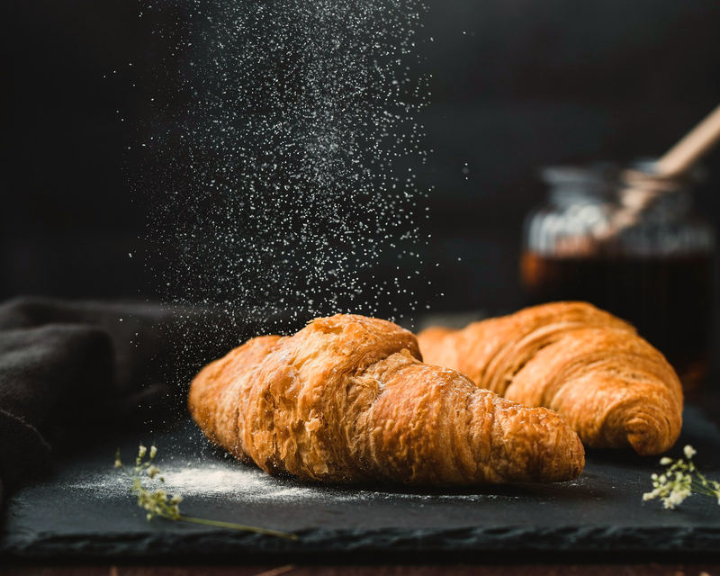
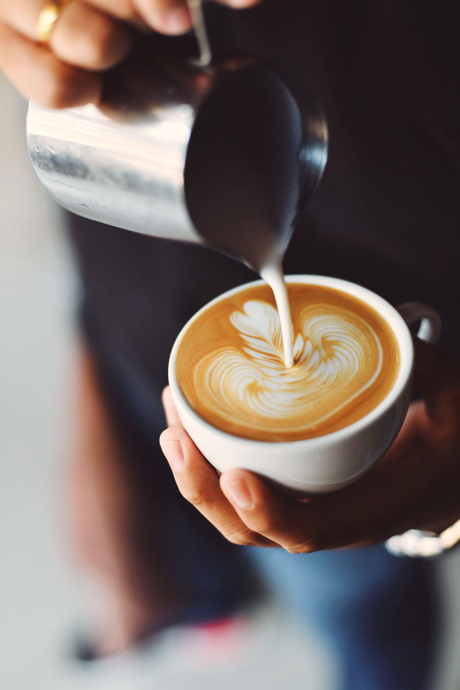

A neighbourhood room
A quiet table, for as long as you need it.
Bread from the morning oven, coffee poured without hurry, and a chair by the glass. Maison Café is a concept drawn for WEBAUR’s portfolio — written as a place, not as a business you can visit.

From the counter
A short menu, changed by the day.
Written the way a neighbourhood café might speak: coffee, bakery, a modest midday plate. Prices are examples, and nothing here can be ordered.

Stay for as long as the cup lasts. Then stay a little longer.
The room
Glass, plants, and a table that is yours.
The house is written as a study of atmosphere: a conservatory table, a taller room with a green wall, lamps over the bar in the evening. It is a designed interior, not a café you can walk into.

Hours & the room
Come in only in the story.
The hours and the address on the visit page are examples. There is no door on a street, and no table to reserve from this site.